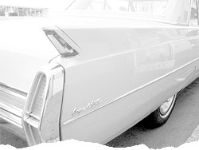

 image: Telstar Logistics“Between these two barriers is locked the street – the street of my childhood.”
I often pass by that place. And I see the large, heavy barrier. I look further, and I spot the other barrier, which is just as large and as heavy. And between these two barriers is locked the street – the street of my childhood. This is the Aprilov Street, in downtown Sofia, between Oborishte and Shipka. I played here, I rode a bicycle here, I also got into a car here for the first time, into my father’s car. This was a notable event for me as well as for our street. In the spring of 1965 there was only one car in my street but in fact this was not a regular car but a Cadillac. The limousine of the American Ambassador. Every Saturday the drive would drive out of the garage, right across from the entrance of our house, and would start to burnish this huge American monster. An incredible sight. The open door disclosed unsuspected beauties. Leather upholstery, a smell of something fine, a massive wheel, and an enormous engine under the bonnet. For me this was a great amusement and an unrealized dream. A dream which actually all of a sudden came true. Because my father bought a car. Well, it was not a Cadillac, it was not even a Mercedes, it was not even a Ford, it was just a Wartburg. So from that moment there were two cars on our street. My father’s Wartburg, and the Cadillac of His Excellency. And the Saturday afternoons received a new meaning. My father and I started to wash the car together, with a hose and a soft brush, with soap-suds, the Wartburg started to shine fabulously. It was an enemy worthy of the huge Cadillac’s steel. We were washing, and so was the ambassador’s driver. In those years they often showed Nixon on television, my God, they showed how he was riding in a Cadillac just like the one parked next to our Wartburg. This is the street of my childhood. With the cracked paving stones, with the ants wriggling among them. With the lilac in the yard, and with the cats hidden in the house entrances. And the two cars. My father’s car, and the ambassador’s car. Then unnoticeably things changed. The cars became three as the writer Nayden Valchev also bought a Wartburg. Then, the following year, a little further down the street a Moskvich appeared, after a while a Volga started to park nearby. Time passed. There were more and more cars. Today the street is beyond recognition. The barriers stand proudly guarding the residence, and cars occupy the sidewalks. I stand by and look – is this the street of my childhood?
referenced works
- This part of Sofia is one of the most prestigious residential areas of the capital. It is located in downtown Sofia. Despite this location, the air there is not polluted. The little park with the “Doctors’ Monument” is nearby. Not very far from there is also the park “Oborishte”, previously known as “Zaimov”. The widespread greenery on the streets, the houses’ yards and the biggest apartment buildings contributes a great deal for the good ecology of the neighborhood. Construction in the neighbourhood began in the 19th century. Due to its close proximity to the Tsar’s palace, it became a sought after location for Sofia’s notable people. Their single-family houses, usually one or two stories high, were preserved and still exist nowadays. The neighborhood’s good location and the great variety of housing facilities, makes it of very high demand for buyers. The sale prices, especially for new construction are very high and reach up to 1000 $ per square meter. On the other hand, however, the possibilities for new construction are very limited. ↩
location information
- Name: Aprilov street
- Address: Sofia, Aprilov street
- Time of story: Afternoon
- Latitude: 42.712336
- Longitude: 23.351097
- Map: Google Maps

Write for Us!
We’re looking for short narratives describing pivotal moments of elation, confusion, absurdity, love or grief — or anything in between — inseparably tied to a specific place in Sofia.
Sofia:
Or receive updates by email
Addresses only used for the occational hitotoki mailing. Will not be sold to the crazy people on tram N22.
A list of all available RSS feeds is on the about page
commentary